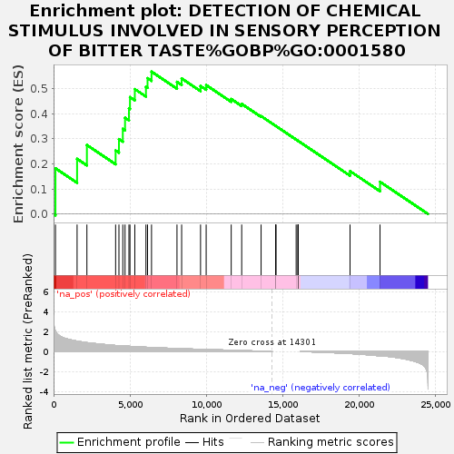
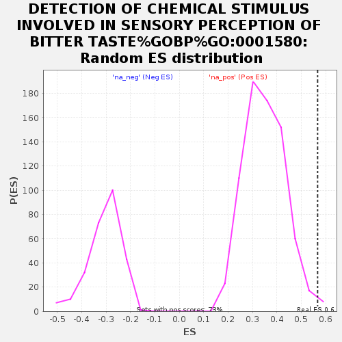

| Dataset | GvHD_A2_Ranks |
| Phenotype | NoPhenotypeAvailable |
| Upregulated in class | na_pos |
| GeneSet | DETECTION OF CHEMICAL STIMULUS INVOLVED IN SENSORY PERCEPTION OF BITTER TASTE%GOBP%GO:0001580 |
| Enrichment Score (ES) | 0.56715035 |
| Normalized Enrichment Score (NES) | 1.6185817 |
| Nominal p-value | 0.009536785 |
| FDR q-value | 1.0 |
| FWER p-Value | 1.0 |

| SYMBOL | RANK IN GENE LIST | RANK METRIC SCORE | RUNNING ES | CORE ENRICHMENT | |
|---|---|---|---|---|---|
| 1 | TAS2R4 | 124 | 2.049 | 0.1820 | Yes |
| 2 | AZGP1 | 1538 | 1.047 | 0.2198 | Yes |
| 3 | TAS2R10 | 2180 | 0.891 | 0.2749 | Yes |
| 4 | LPO | 4058 | 0.603 | 0.2532 | Yes |
| 5 | TAS2R13 | 4276 | 0.592 | 0.2984 | Yes |
| 6 | TAS2R31 | 4529 | 0.563 | 0.3394 | Yes |
| 7 | CA6 | 4675 | 0.547 | 0.3835 | Yes |
| 8 | TAS2R43 | 4930 | 0.525 | 0.4210 | Yes |
| 9 | TAS2R46 | 4998 | 0.518 | 0.4656 | Yes |
| 10 | TAS2R50 | 5314 | 0.491 | 0.4976 | Yes |
| 11 | RTP1 | 6042 | 0.428 | 0.5069 | Yes |
| 12 | RTP4 | 6146 | 0.421 | 0.5412 | Yes |
| 13 | RTP5 | 6407 | 0.401 | 0.5672 | Yes |
| 14 | PIP | 8072 | 0.300 | 0.5265 | No |
| 15 | TAS2R14 | 8377 | 0.284 | 0.5400 | No |
| 16 | TAS2R30 | 9613 | 0.224 | 0.5100 | No |
| 17 | TAS2R3 | 9981 | 0.205 | 0.5136 | No |
| 18 | TAS2R8 | 11619 | 0.126 | 0.4582 | No |
| 19 | PIGR | 12305 | 0.093 | 0.4387 | No |
| 20 | TAS2R5 | 13573 | 0.034 | 0.3900 | No |
| 21 | CST1 | 14534 | 0.000 | 0.3508 | No |
| 22 | CST2 | 14535 | 0.000 | 0.3508 | No |
| 23 | CST4 | 14536 | 0.000 | 0.3508 | No |
| 24 | RTP3 | 15866 | 0.000 | 0.2964 | No |
| 25 | TAS2R1 | 15995 | 0.000 | 0.2912 | No |
| 26 | TAS2R16 | 15996 | 0.000 | 0.2912 | No |
| 27 | TAS2R38 | 15997 | 0.000 | 0.2912 | No |
| 28 | TAS2R39 | 15998 | 0.000 | 0.2912 | No |
| 29 | TAS2R40 | 15999 | 0.000 | 0.2912 | No |
| 30 | TAS2R7 | 16001 | 0.000 | 0.2911 | No |
| 31 | TAS2R9 | 16002 | 0.000 | 0.2911 | No |
| 32 | GNAT2 | 19391 | -0.199 | 0.1708 | No |
| 33 | RTP2 | 21352 | -0.413 | 0.1283 | No |
